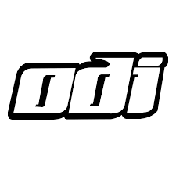

A One Day International (ODI) is a form of limited overs cricket, played between two teams with international status, in which each team faces a fixed number of overs, usually 50. The Cricket World Cup, generally held every four years, is played in this format. One Day International matches are also called Limited Overs Internationals (LOI), although this generic term may also refer to Twenty20 International matches. They are major matches and considered the highest standard of List A, limited overs competition.
The international one day game is a late-twentieth-century development. The first ODI was played on 5 January 1971 between Australia and England at the Melbourne Cricket Ground. When the first three days of the third Test were washed out officials decided to abandon the match and, instead, play a one-off one day game consisting of 40 eight-ball overs per side. Australia won the game by 5 wickets. ODIs were played in white coloured kits with a red coloured ball.[1]
In the late 1970s, Kerry Packer established the rival World Series Cricket competition, and it introduced many of the features of One Day International cricket that are now commonplace, including coloured uniforms, matches played at night under floodlights with a white ball and dark sight screens, and, for television broadcasts, multiple camera angles, effects microphones to capture sounds from the players on the pitch, and on-screen graphics. The first of the matches with coloured uniforms was the WSC Australians in wattle gold versus WSC West Indians in coral pink, played at VFL Park in Melbourne on 17 January 1979. This led not only to Packer's Channel 9 getting the TV rights to cricket in Australia but also led to players worldwide being paid to play, and becoming international professionals, no longer needing jobs outside cricket. Matches played with coloured kits and a white ball became more commonplace over time, and the use of white flannels and a red ball in ODIs ended in 2001.
The ICC, international cricket's governing body, maintains the ICC ODI Rankings for teams (see table on the right), batsmen, bowlers and all rounders. Currently, England are the top ranked ODI side.